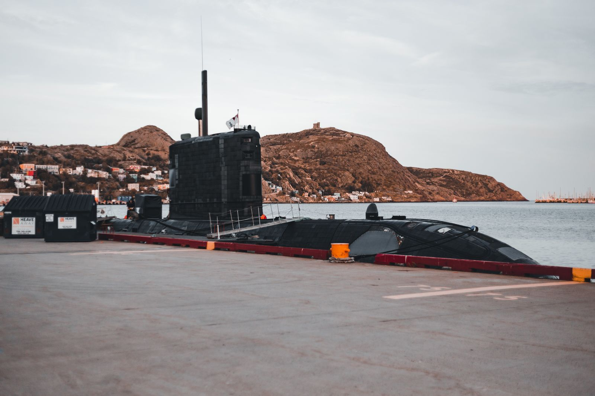

FR.00 — OVERVIEW
Steel, salt, and the maths that keeps them apart.
Deep Hull is the practice of Andrew Fell, a submarine pressure hull engineer. I survey, check and specify pressure hulls for the people who operate crewed submersibles — research, tourist and inspection boats — and I write down what the steel actually says. Especially when it says no.
Every fee is published on this page. Every number below can be checked with a pencil.

FR.08 — THE SHELL, BY NUMBERS
Depth is pressure. Pressure is arithmetic.
Set a depth, a hull radius and a shell thickness. The explorer runs the two sums every pressure hull starts with — and then tells you, in plain words, why the second sum is not the one that keeps people alive.
σ = p · r ÷ t — membrane hoop stress, thin cylinder
Yield reference: HY-80 steel, 552 MPa
SCHEMATIC SECTION — NOT A VESSEL. Frame, viewport and hatch positions are illustrative; the arithmetic is not.
Membrane stress sits comfortably inside yield — which proves very little. Pressure hulls are lost to buckling, not to membrane stress: the shell gives way sideways between its frames. The real check is the collapse calculation, run to the classification rule factor with the measured out-of-roundness, not an assumed one.
| DEPTH | PRESSURE (MPa) | PRESSURE (BAR) | WHAT OPERATES THERE |
|---|---|---|---|
| 100 m | 1.01 | 10.1 | Shallow tourist submersibles |
| 300 m | 3.02 | 30.2 | Inspection submersibles; the explorer's default |
| 600 m | 6.03 | 60.3 | Deep research boats, new-build class |
| 1,000 m | 10.06 | 100.6 | The deepest rating this practice has surveyed |
| 1,500 m | 15.08 | 150.8 | The explorer's scale limit — beyond it, bring drawings |
The table and the explorer run the same sum: p = ρ · g · h. If your pencil disagrees with either, use the pencil and tell me.
FR.16 — ENGAGEMENT REGISTER
Recent work, with the tombstones showing
“His gauging grid found in two days what two dockings had walked past. The report went to class exactly as written — no queries, no rework, and the renewal steel was ordered off his tables.”
FR.24 — FEES, IN PRINT
What it costs, before you ask
FR.32 — RENEWAL ESTIMATOR
Plate renewal, sized before the yard visit
Renewal steel — formed, welded in and NDT-tested — currently prices at £9,800–£13,500 per tonne in the yards this practice works with. Size a renewal the way the first survey meeting will:
Steel density 7.85 t/m³. The band excludes docking, staging and coating — the three items that most often double a renewal bill, and the three a proper survey report prices separately.
A docking coming up, or a number you don't trust?
One enquiry path, answered by the engineer who will do the work. Say the vessel, its rating, and when it next comes out of the water.